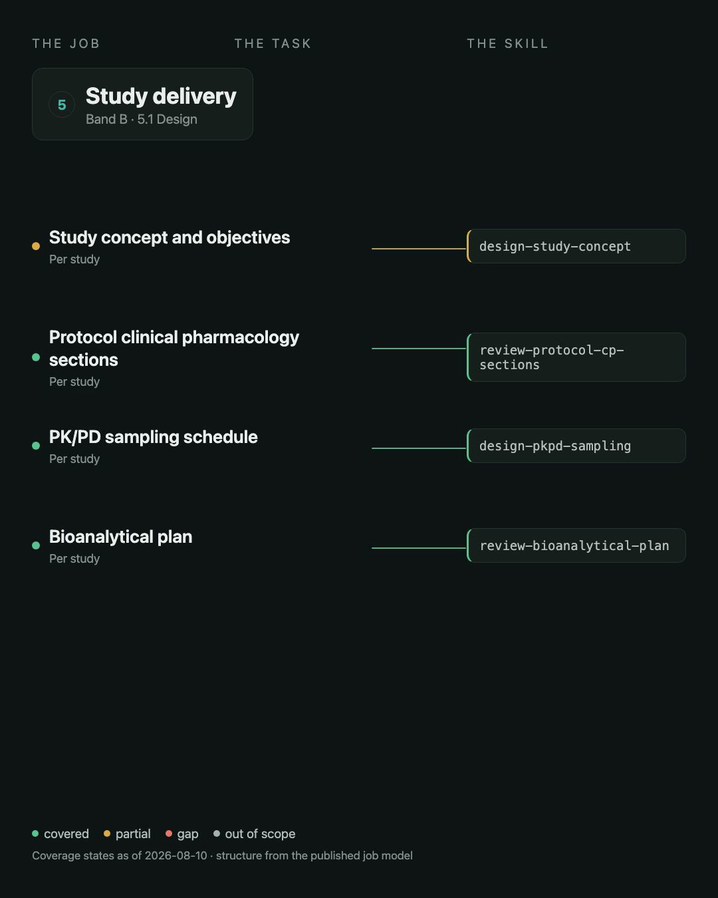
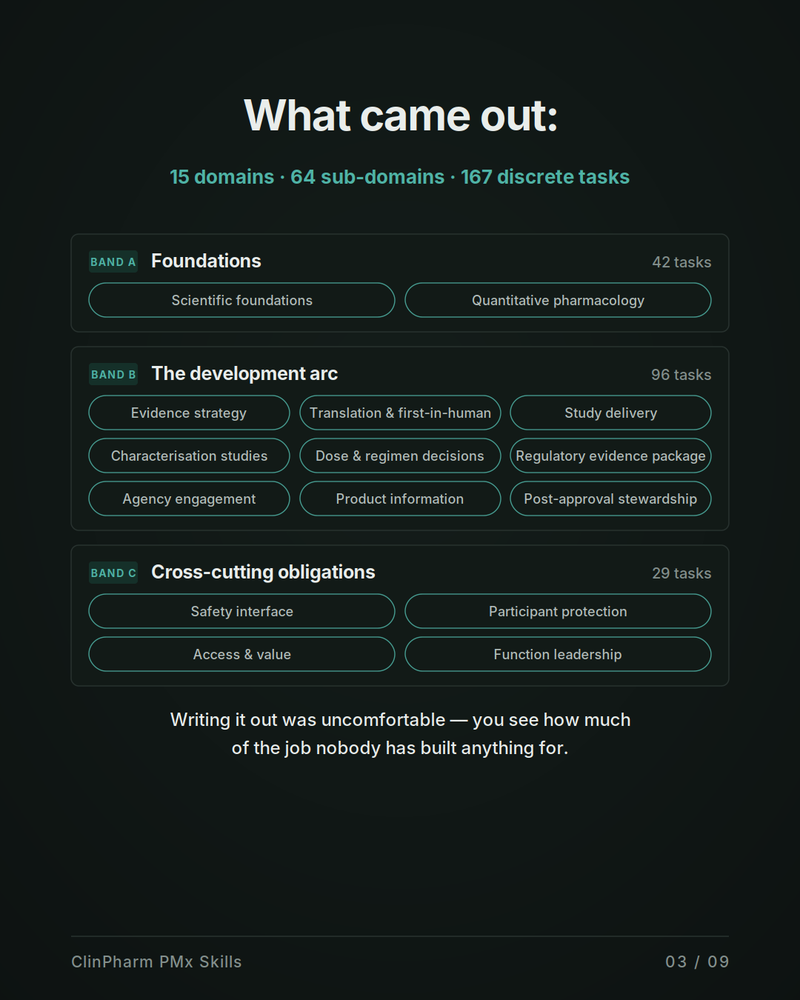
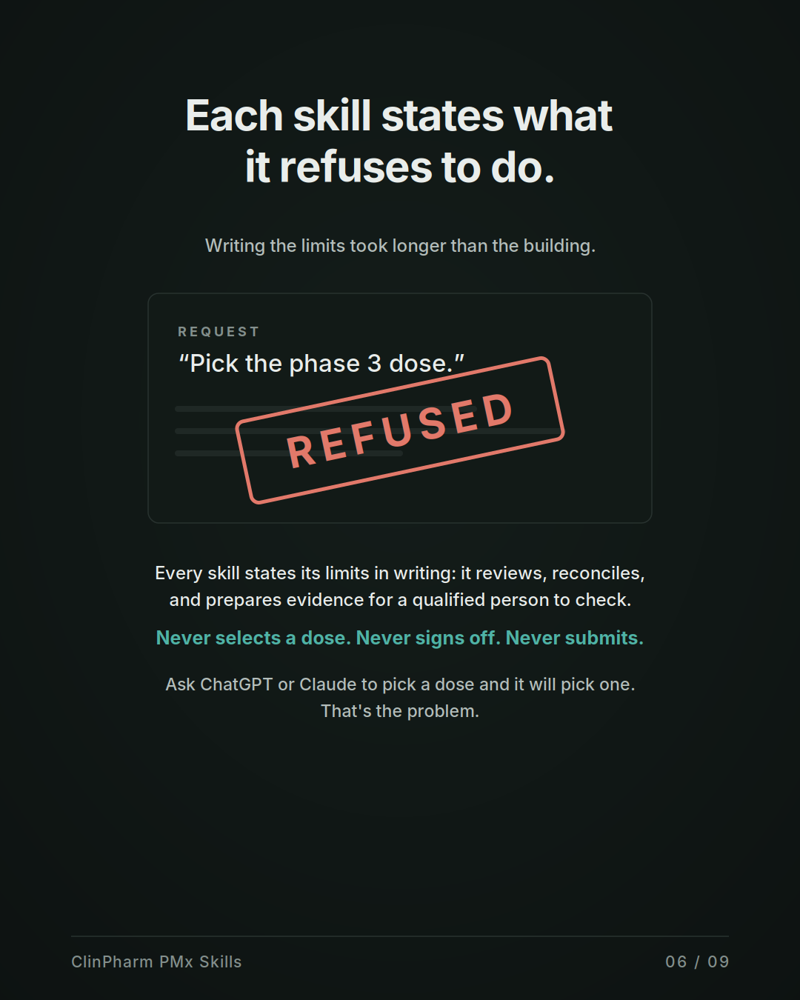
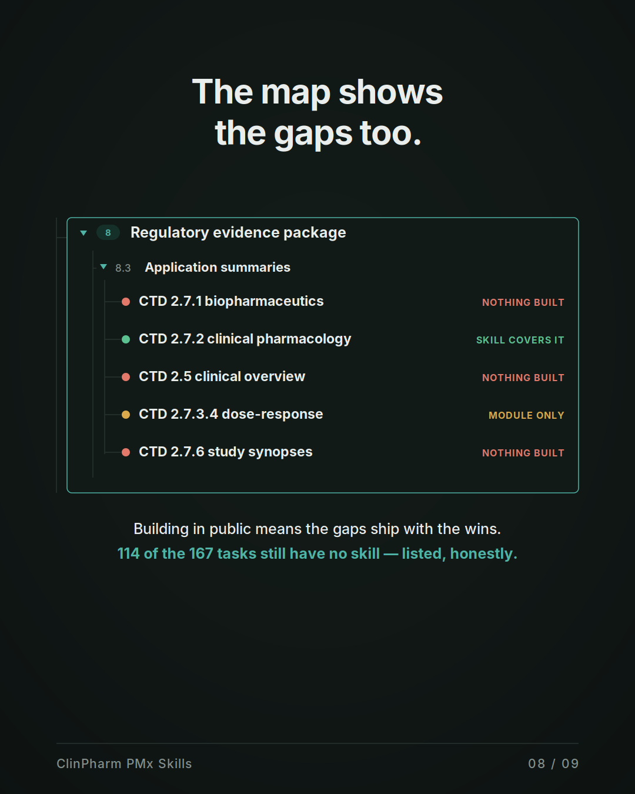
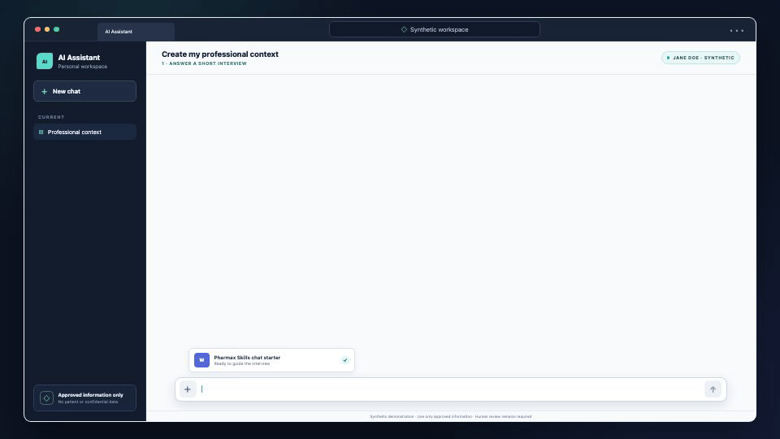

Released — 151
Each package passed its assigned evidence gate. That is not a clinical-validation claim. See the claim ledger for the live numbers.
Read the claim ledger →OPEN • PORTABLE • HUMAN-GOVERNED
Portable Agent Skills that check a Clinical Study Report, protocol, or briefing document against its own sources — and report what they found without pretending to clinical judgment they have not earned.
No account, backend, analytics, or document upload to this site.
THE MAP · 167 TASKS
Writing it out that way was uncomfortable. You see how much of the job nobody has built anything for.
The profession made navigable in the browser - no AI, no install. Open a domain, then a subdomain, to reach a task page. Coverage and package status stay honest on each page.
Skills review, reconcile, verify, structure, and flag. Qualified humans decide, approve, sign, and submit.

HOW IT WAS BUILT
The recording is the same sequence as the library: write the profession down, split skill from context from human decision, build what can run, write the refusals, and leave the gaps on the map.
Play it. It does not autoplay - it is a minute long on purpose, so each step can be read.



151 PACKAGES — 151 RELEASED, 0 BUILT
Each package passed its assigned evidence gate. That is not a clinical-validation claim. See the claim ledger for the live numbers.
Read the claim ledger →A built package exists and validates, but qualification has not passed. None currently sit in that state.
Every package ships a generated PASTE.md. Paste it into an ordinary chat with only the source material permitted in that environment.
SYNTHETIC DEMONSTRATION
A review reads the documents you permit, compares values across them, and reports each disagreement with both sides and their locations. It never decides which value is right — that is the reviewer's job, and the tool says so.
Shown here: build-work-context, the released context utility. Fictional throughout. Missing details stay unknown rather than being invented.
ClinPharm PMx Skills is not medical advice, clinical decision support, a validated GxP system, or a replacement for scientific and regulatory judgment. No skill recommends a dose.

MEASURED, NOT MARKETED
built, never counted as released
The 6/6 result is a historical deterministic-path diagnostic, not a current qualification result. No model-path qualification result is currently accepted. Review the prompts, raw outputs, rubric, scores, and limitations, or read the fixtures and expert keys.
WHERE THE SKILLS APPLY
BUILD THE NEXT SKILL